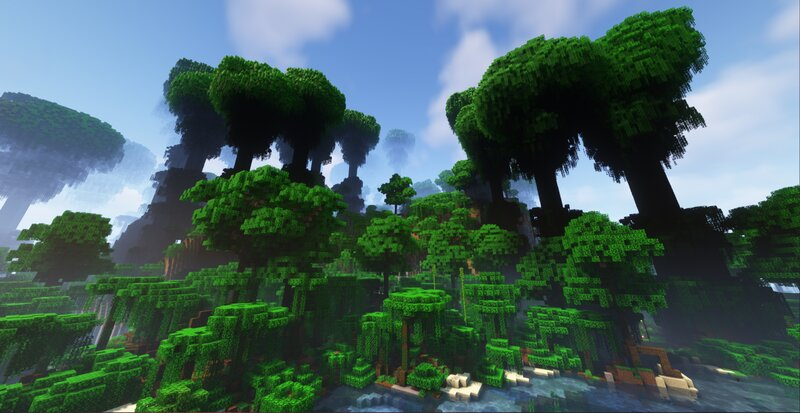
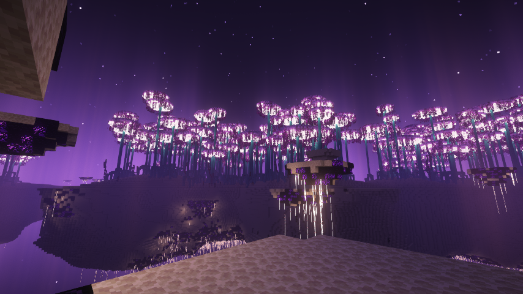
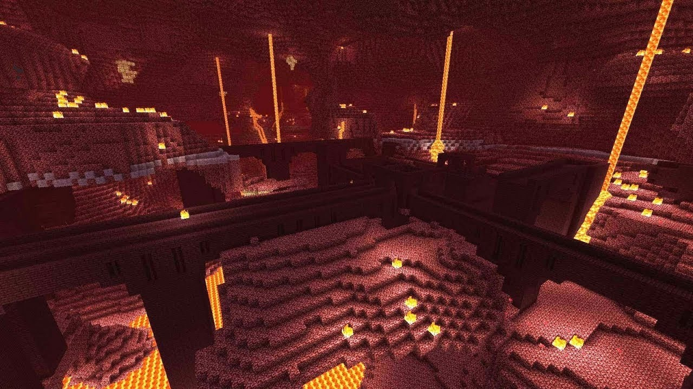

Minecraft é um dos jogos mais influentes e populares da era moderna, conhecido por sua simplicidade, criatividade e versatilidade. Desenvolvido por Markus Persson e lançado pela Mojang Studios em 2011, o jogo tem cativado uma ampla gama de jogadores com sua abordagem única ao sandbox e à construção. Aqui estão alguns aspectos chave sobre Minecraft:
Gameplay
Mundo Aberto e Sandbox: Minecraft é um jogo de sandbox, o que significa que oferece uma grande liberdade ao jogador para explorar, construir e modificar o mundo. O ambiente é composto por blocos tridimensionais que representam diferentes materiais e recursos, como terra, pedra, madeira e minérios.
Modos de Jogo:

Sobrevivência: Neste modo, os jogadores devem gerenciar sua saúde e níveis de fome enquanto exploram o mundo, coletam recursos e enfrentam inimigos. O objetivo é sobreviver o maior tempo possível, construindo abrigo, ferramentas e armas, e mantendo-se seguro contra criaturas como zumbis e esqueletos. Criativo: No modo criativo, os jogadores têm acesso a todos os blocos e recursos do jogo sem limitações. Eles podem voar, não sofrer danos e construir livremente, facilitando a criação de projetos grandes e complexos. Aventura: Este modo é projetado para mapas personalizados e aventuras criadas por outros jogadores. Os jogadores seguem regras específicas e não podem destruir blocos com ferramentas não apropriadas, o que dá uma sensação mais estruturada e desafiadora à experiência. Espectador: Permite que os jogadores observem o mundo sem interagir com ele. É útil para explorar mapas e visualizar construções.
The End
Descrição: O End é a dimensão final e o objetivo final da maioria dos jogadores, onde está localizado o Dragão do End. É acessado através de um portal de End que é encontrado em fortalezas no Mundo Norma

O Nether
Descrição: O Nether é uma dimensão infernal, cheia de perigos e recursos únicos. É acessível através de portais feitos de obsidiana.